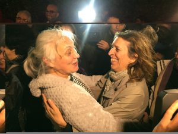

改变绝对有可能– 尤其当大家团结一致行动起来的时候。无论是写声援信、在企业总部外抗议，邀请难民住到家里，或者优化法律，在2017年里，希望一次又一次地战胜恐惧，而这一切，全赖有你。让我们分享一下30个国际特赦组织支持者所造就的美好时刻：
1 月
我们争取让知名的冈比亚囚犯获释

经过国际特赦组织支持者3年多的倡导行动，反对党成员阿玛杜·萨内（Amadou Sanneh）、马朗·法蒂（Malang Fatty）及其兄弟哈吉·桑布·法蒂（Alhagie Sambou Fatty）终于在冈比亚获释。阿玛杜·萨内说：“国际特赦组织的工作能够给人带来影响。若没有国际特赦组织的声援，情况恐怕更糟……我对此十分感激。所有入狱者都非常感激国际特赦组织的工作。”
基于前被羁押者的证言，国际特赦组织有关赛德纳亚监狱的互动纪录片首次窥见了这座臭名昭著的军事监狱中的骇人境况，数百人被送入监狱但从此消失。我们决心详细记录这座叙利亚酷刑监狱中发生的罪行，以确保正义得以伸张。我们的纪实荣获久负盛名的皮博迪—脸书（Peabody-Facebook）奖，以表彰我们在数字报告方面的卓越表现。这份报告亦被媒体广泛报道。
2 月
乌兹别克斯坦被囚时间最长的记者终于获释
穆哈迈德·贝克扎诺夫（Muhammad Bekzhanov）在乌兹别克斯坦身陷囹圄17年后获释。他是世界上被囚时间最长的记者之一。从国际特赦组织2015年的“为人权而写”（Write for Rights）运动开始，全球逾10万人响应运动，写信要求释放贝克扎诺夫。仅在加拿大便有逾1万5千名声援者联署请愿书、寄送信件及发推呼吁释放贝克扎诺夫！
达达阿布难民营暂缓关闭
当肯尼亚政府宣布计划关闭世界上最大的难民营达达阿布（Dadaab）时，国际特赦组织的支持者立即采取行动，呼吁肯尼亚当局终止强迫遣返索马里难民的危险行为，并呼吁当局寻求其他措施。2月，肯尼亚高等法院在审理一桩由当地非政府组织提起，并得到国际特赦组织支持的诉讼后，堵住了政府关闭难民营的计划。法官甚至在判决中援引了国际特赦组织的报告。目前，我们继续努力阻止强制性遣返索马里难民，并确保肯尼亚及国际社会寻求安置难民的其他方案。
3 月
阿根廷政府承认流产并非犯罪

27岁的贝琳（Belén）在阿根廷一家公立医院流产后被以严苛的反堕胎法判处入狱8年。她在审前已被羁押了两年。上诉至最高法院后，再加上国际特赦组织和合作机构的密集倡导行动后，贝琳被判无罪。这是该国人权方面的重要进展！
你们的信令日本和平活动人士命运改变
64岁的山城博治在首次出庭一天后获得保释。去年，他因抗议日本高江（Takae）附近的新美军基地建造工程遭到拘捕，在受到严格限制的条件下被拘押了5个月，亦无法会见家人。他在获释时更能读到你们寄给他的4百多封鼓励信 —— 感谢你们！
4 月
爱尔兰进一步迈向堕胎改革
在爱尔兰，专为检视严格的堕胎制度而成立的委员会投票支持修改宪法，修宪将在堕胎方面给予女性更多的自由。公民代表大会（Citizen’s Assembly）中三分之二的成员投票赞成当女性主动要求堕胎时，会允许其寻求堕胎服务，这一建议现已提交国会。投票结果呼应国际特赦组织爱尔兰分会进行的民意调查，其结果显示，80%的爱尔兰民众希望任何对堕胎法的修改均以妇女健康为核心。国际特赦组织记录了在爱尔兰寻求堕胎的妇女及女童的痛苦经历，认为限制堕胎的法律侵害了她们的多项权利。
迅速的声援行动在伊朗和美国挽救了生命
在伊朗，多亏了成千上万名发推文及向伊朗当局发信呼吁的人，至少两人的生命被挽回。2月，哈米德·阿马迪（Hamid Ahmadi）的行刑在最后一刻被叫停；4月，萨拉·沙迪扎迪（Salar Shadizadi）亦免于被处决并于狱中获释。两名青年分别因为17岁及15岁时犯下的罪行被判死刑。美国当局亦在国际特赦组织支持者及其他人士的压力下，对乌克兰籍人士伊万·特莱古兹（Ivan Teleguz）的死刑进行减刑，当时距其被处决仅有5天时间。他的律师告诉我们，国际特赦组织的工作“让许许多多人了解到了这起案件并为之发声”。谢谢你们！
苹果成为首家公开其钴冶炼方名单的企业
多亏你们于去年世界无童工日（World Day Against Child Labour）发出的信、推文及在苹果（Apple）商店外开展的公开行动，苹果成为首家依照供应链尽职调查国际标准，公布全部钴冶炼公司名单的企业。虽然要做的事情还有许多，但这是向解决钴供应链中的人权侵犯问题，并增加透明度迈出了一步。
5 月
告密者切尔西·曼宁获释
被判有期徒刑35年的切尔西·曼宁（Chelsea Manning）于1月获即将卸任的美国总统奥巴马减刑，并于5月17日出狱。她因披露包括指向美军可能犯下战争罪的机密情报入狱。在我们2015年的“为人权而写”（Write for Rights）写信运动中，逾25万人写信呼吁释放她。她在写给国际特赦组织的信中表示：“我支持你们的工作，保护那些公义、自由、真理和尊严被剥夺的人。”
秘鲁司法判決里程碑，针对环保人士诉讼被撤销
针对人权捍卫者麦克西玛·阿库纳·阿塔拉亚（Máxima Acuña Atalaya）的诉讼被撤销，这是秘鲁环保活动人士取得的重大胜利！麦克西玛被毫无根据地指控入侵土地，这项刑事诉讼程序持续近5年后，最高法院判定该指控缺乏法律依据。在法院做出此判决之前，国际特赦组织收到了支持者逾15万封表达声援和并肩抗争的信。我们的员工把一箱箱的信送到麦克西玛位于秘鲁山区的家里，交到了她的手中。
台湾最高法院判决支持婚姻平权

台湾最高法院的判决认可婚姻平权，使台湾有可能成为亚洲同性婚姻合法化的先驱。全球40个国家的国际特赦组织支持者发出求婚式的支持讯息，敦促台湾“说好”。这些讯息在国际特赦组织台湾分会同我们在当地的合作伙伴所组织的大型集会上展示，显示来自全世界的支持。台湾政府有两年时间制定婚姻平权的法律。我们将开展进一步的倡导活动，以确保该法尽快出台。
6月
3名中国劳工维权人士获取保候审！
华海峰、李招和苏恒获得取保候审，三人此前在调查华坚鞋厂劳工权益问题时遭到拘捕。三人获释虽让人如释重负，但按照中国法律的规定，被“保释”的被告人往往仍然受到警察的严密监控。国际特赦组织继续关注相关情况。华海峰衷心感谢“国际特赦组织每一位值得尊敬的同事，在我被拘留时为我发声，表达声援。是你们的支持让我的家人更加坚定！谢谢你们！”
被囚活动人士得到治疗延续生命
叙利亚库尔德（Kurdish）反对党活动人士苏莱曼·阿布杜尔马吉德·欧索（Suleiman Abdulmajid Oussou）于6月24日从位于卡米什利（Qamishli）的阿拉亚（Allaya）监狱获释。他于5月遭到安全部队（Asayish）拘留，被羁押在恶劣的条件中。苏莱曼罹患严重心脏病，已获释接受治疗。多亏你们的声援，他获得了其病所需的医疗照护。
7 月
马达加斯加环保人士从狱中获释
环保活动人士克劳维斯·拉扎菲马拉拉（Clovis Razafimalala）因公开谴责马达加斯加非法走私红木及其他自然资源的问题而闻名。他于去年9月被捕，并被控组织和参加一项他实际上并未参与的抗议活动，之后在高墙之内度过了接下来的10个月。7月，克劳维斯从狱中获释并被判叛乱指控不成立，然而，他却因另外两项控罪被判缓刑5年。国际特赦组织认为此举意在蓄意恐吓他，并警告马达加斯加的其他环保活动人士。克劳维斯是国际特赦组织“为人权而写”运动的对象，我们亦会继续呼吁撤销针对他的所有指控。克劳维斯说道：“感谢国际特赦组织。是你们使我走出牢狱。”
我们的报告迫使企业对棕榈油业的人权侵害问题做出回应
自我们的报告《棕榈油业的惊人丑闻：知名品牌背后的劳工侵权行径》（The Great Palm Oil Scandal）发表后，在丰益国际（Wilmar）印度尼西亚的棕榈种植园内工作的工人表示，他们已经开始见到工作环境的改善，一些工人的待遇亦有所提升。如今，工人的日薪不再和工作指标挂钩，也有约25%的加薪，多数女工成为了固定工。这些改进发生在我们针对高露洁-棕榄（Colgate-Palmolive）、家乐氏（Kellogg’s）、雀巢（Nestlé）、宝洁（Procter & Gamble）以及联合利华（Unilever）5家丰益国际的棕榈油买家采取行动和倡导运动的一周以后。
8 月
智利女权取得重大胜利
智利宪法法庭裁定支持在特定情形下将堕胎行为去罪化，这是人权及智利妇女与女童权利保护的胜利！判决确认，智利宪法规定在强奸或乱伦导致怀孕、孕妇有生命危险及胎儿有致命损伤的情形下可进行安全堕胎。国际特赦组织美洲区主任艾瑞卡·格瓦拉罗萨斯（Erika Guevara-Rosas）道：“这项胜利是全美洲数以百万计女性努力的见证。”
倡导运动让人权捍卫者获释
Not a bad days work @Amnesty: weve seen people freed in 3 countries: a circus performer in Israel, a professor in Sudan & Cameroon activists pic.twitter.com/J6BdhxwA9K
— Thomas Coombes 🕯 (@T_Coombes) 2017年8月30日
8月，数名人权捍卫者在国际特赦组织支持者跟进其案件后获释，当中包括苏丹社会发展组织（Sudan Social Development Organization）的创始人姆达维博士（Dr Mudawi）、前乌兹别克斯坦政府官员与联合国工作人员艾尔肯·穆萨耶夫（Erkin Musaev）以及巴勒斯坦马戏演员穆罕默德·阿布·萨哈（Mohammad Abu Sakha）。
刚果（金）政府承诺于2025年前终结童工现象
刚果民主共和国政府承诺于2025年前消除采矿业中的童工问题，并落实我们在2016年发布的报告《不惜卖命的真相》中提出的建议。这份报告揭示成千上万名成年人及儿童在刚果（金）南部条件危险恶劣的手工钴矿场中工作。多亏我们的倡导运动，这是刚果（金）政府首次承认确有儿童在手工钴矿场中工作。
9 月
我们的#给一个家成为全球性的运动！
为应对全球难民危机，逾一千名来自60个国家的艺术家参与了300多场演出，共同传达#给一个家（#GiveaHome）这个强而有力的信息。我们与沙发音乐（Sofar Sounds）联袂推出这项影响生命的主题活动，旨在把大家联合起来，为世界各地的难民提供支持。表演者中既有著名艺术家，亦有音乐新星，包括艾德·希兰（Ed Sheeran）、格雷戈里·波特（Gregory Porter）、Hot Chip、杰西·薇尔（Jessie Ware）及莱伊拉计划（Mashrou’ Leila）！
我们拒绝让缅甸军队的暴行继续肆虐
我们的调查结合卫星图像与证词、照片与视频，发现缅甸军方实行焦土政策和种族清洗、非法杀害及任意逮捕等一系列严重人权侵犯行径的明确证据。我们是首家确认缅甸军方在与孟加拉国接壤边境布下杀伤人员地雷的组织。我们通过媒体、运动及倡导性会议的方式，不辞辛劳地呼吁缅甸终结暴力、允许人道主义活动人士及联合国真相调查团进入该国，且要求联合国实行全面武器禁运。在你们的支持下，我们会确保肇事者被绳之以法。
10 月
国际特赦组织土耳其分会主任获释
我们为国际特赦组织土耳其分会主任艾德尔·伊瑟（İdil Eser）及其他9名人权捍卫者获释深感欣慰。7月，在该国对人权捍卫者实施的全面打压中，艾德尔因与恐怖主义相关的荒谬罪名被捕。她经受了漫长的折磨，而对她在国际特赦组织土耳其分会的同事来说，也是另一种形式的煎熬。他们所展现出的坚毅不拔令人鼓舞。
艾德尔在狱中写道：“我相信，像国际特赦组织一样的组织在当今分裂与排外愈演愈烈的世界愈发重要。我认为，我们的事业进一步加强了各人权组织之间的团结，我为此感到欣喜。”谢谢参与这项运动的每一个人，你们的辛劳与坚持促成了这一结果。我们会继续开展倡导活动，直至被捕的国际特赦组织土耳其分会主席泰纳·齐李克（Taner Kılıç）及许许多多被不公地囚禁的人也能重获自由为止。
伊布拉辛·哈拉瓦获释是一项重大胜利
爱尔兰籍人士及良心犯伊布拉辛·哈拉瓦（Ibrahim Halawa）获释是为他开展倡导运动的人所取得的重大胜利，至此，他结束了在埃及一所监狱里已经承受4年的痛苦。我们对这一案件的分析指出，他仅仅因为和平行使言论及集会自由权而遭到逮捕和任意拘押。多亏他的家人、朋友及国际特赦组织支持者的密集倡导运动，伊布拉辛已经同他在爱尔兰的挚爱团聚。他的家人表示：“许许多多了不起的人相信伊布拉辛是清白无辜，为他开展行动，并声援他的家人。”
11 月
毛里塔尼亚博客作者的死刑判决被撤销
博客作者穆罕默德·乌尔德·谢赫·麦克海提尔（Mohamed Ould Cheikh Mkhaïtir）因在脸书（Facebook）发表“渎神”贴文而被判死刑，但在努瓦迪布（Nouadhibou）上诉法庭撤销其死刑判决后获释。在法庭做出此份裁决之前，由秘书长萨利尔·赛迪（Salil Shetty）带领的国际特赦组织代表团于去年到访毛里塔尼亚，揭露该国的人权状况。
我们的突破性报告追究壳牌公司的责任
我们发布的新报告《犯罪企业？》（A Criminal Enterprise?）探究了壳牌（Shell）在20世纪90年代尼日利亚奥格尼地区发生的严重人权侵犯事件中所起的作用。报告援引的证据来自数千页的公司内部文件、证人证词、国际特赦组织保存的档案及其他资料。报告呼吁尼日利亚、英国和荷兰当局展开调查，查明壳牌公司是否应负刑事责任。此举很快产生了效果，检察官宣布将检视有关文件。国际特赦组织积极支持人权捍卫者埃丝特·基奥贝勒（Esther Kiobel）的抗争，以追究壳牌公司的责任。6月，埃丝特在荷兰针对壳牌公司提出了标志性诉讼，控告该公司在1995年非法杀害其丈夫及另8名奥格尼人的事件中扮演了共谋者的角色。我们在埃丝特获得其应得的结果前不会停下！
行业巨头就童工报告展开调查
我们发布了新的进展报告，作为对去年报告的跟进，披露了多家大品牌公司与刚果民主共和国手工钴矿场中人权侵犯现象之间的关联。报告提及的中国华友钴业及德国宝马（BMW）等公司赶来参加了报告发布会，此举是这些公司关注我们的工作将如何影响其品牌的一个重要标志。基于我们的报告，伦敦金属交易所（London Metal Exchange）就在伦敦交易的钴矿是否涉及童工展开调查，并要求成员提供有关责任采购的详情。伦敦金属交易所是制定全球金属价格的组织之一。
挪威青少年与泰贝赫并肩抗争

数以千计的青少年加入大型点燃火炬活动，表达与18岁的泰贝赫·阿巴斯（Taibeh Abbasi）并肩抗争。泰贝赫生活在恐惧之中，害怕被遣送至阿富汗这个她从未到过的国家。他们向挪威政府传达的信息非常明确，就是保障像泰贝赫一样的阿富汗青少年的安全，不要在他们年满18岁时将其强制驱逐！我们邀请大家签署请愿书，呼吁挪威政府停止将人遣返阿富汗，除非该国的局势已经稳定，能确保这些人的安全与尊严。我们收到了逾10万个签名。感谢你们！
我们揭露了于巴黎出售的可怕非法酷刑工具
国际特赦组织的研究人员发现，中国企业在巴黎举行的军警装备展（Milipol）上售卖钉棍、带刺电击防爆叉、电击背心及重型脚镣等非法酷刑工具。欧盟自2006年起便禁止酷刑工具的进出口。2016年，欧盟亦禁止了在贸易展销会上推销及展示这类工具。我们对此立即做出反应，发布了我们的研究发现。推销这类工具的摊位被关闭，当局对此展开调查，全球媒体亦纷纷报道了这一事件。
12 月
你的文字改变了生命
12月标志着我们的年度“为人权而写”（Writes for Rights）运动拉开帷幕，在每一年，你们所给予的支持都令人惊叹。例如去年，你们写了4,660,774封信、电邮、推文及其他信息，数量极为惊人。这些信息中表达支持的文字彻底改变了众多我们为其权利而写之人的命运。美国的告密者爱德华·斯诺登（Edward Snowden）是我们2016年“为人权而写”的对象，他说道：“我想谦卑并全心全意地向你们致谢，感谢你们坚持不懈的倡导与声援。”单是爱德华一人便收到了国际特赦组织支持者从110个国家发来的710,024条信息！
澳大利亚通过婚姻平权法
澳大利亚议会通过了2017年婚姻法修正（定义及宗教自由）议案并将其写入法律。国际特赦组织澳大利亚分会新南威尔士州同性恋、双性恋、跨性别人士、酷儿及双性人网络（LGBTQI Network）召集人利兹·普里斯（Lizzi Price）评论道：“这是澳大利亚姗姗来迟的历史性时刻，该成果源自无数人的奋斗、决心和勇气。澳大利亚的LGBTQI人士、社区团体、活动人士及联盟挺身而出，为平权建立了锐不可当的运动。单是这一点就有太多值得庆祝的了。”